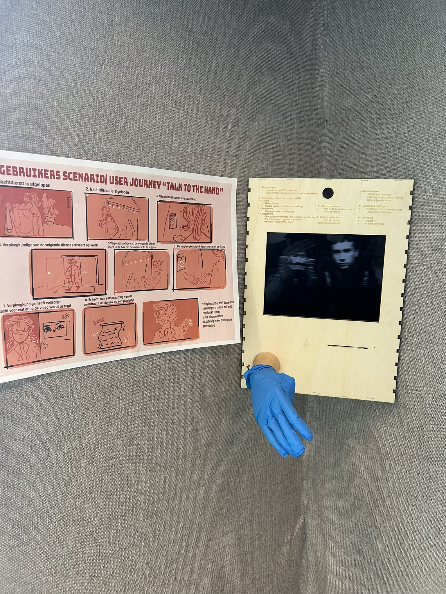

SEM VAN DONGEN
Who am I?
I am a creative designer studying Communications, multimedia-design at Avans Breda. I loves learning about new thing and using my hands. I don't want to be the best at something i just want to understand and use it. My love for designing started out with music, without music i would not be here.

Selected Works

Reel to Reel
A speculative design artifact that confronts the ephemeral, intangible nature of contemporary digital streaming by reimagining iOS through the physical mechanics of a magnetic reel-to-reel cassette.

Talk to the hand
A multi-stage service concept and physical terminal designed to humanize, stabilize, and safeguard the critical shift handover moment between hospital night nurses and incoming day staff.

Wij tegen Zij
A large-format editorial poster exploring ideological polarization, social friction, and the fragility of shared humanity along contemporary political compass axes.